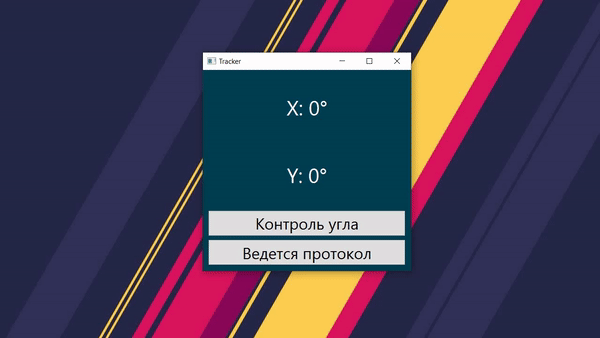

Разработка позволяет интраоперационно определять угол ввода транспедикулярного винта и контроллировать правильность его введения в режиме реального времени

Комплекс состоит из трех частей - непосредственно самого инструмента, состоящего из ручки и сменных насадок, электроники, включающей в себя микроконтроллер на ATMEGA328 и гироскоп MPU6050, и программы для ПК. Прошивка для микроконтроллера написана на C++, программа для ПК сделана на Python + QT6.
Устройство показывает углы отклонения инструмента от заданной оси. По умолчанию "нулевая ось" ориентирована строго перпендикулярно, но ее всегда можно перенастроить, удерживая кнопку на ручке. Потом можно вернуться в исходную "нулевую ось", сделав короткое нажатие на кнопку
Контроль угла
Задав под свои нужды "коридор" для двух осей, можно четко контроллировать, является ли отклонение слишком большим, или все в порядке и инструмент в "безопасной зоне". При выходе из коридора Ось окрашивается красным.
Интраоперационное протоколирование

Все действия с инструментом - перемещение, установка новой нулевой оси, возврат к исходной нулевой оси, включение и выключение контроля угла записываются программой в протокол формата html. Протокол состоит из заголовка с датой операции и записанными состояниями с привязкой к времени. При необходимости его можно распечатать.
Смена насадок
ЗАГЛУШКА ДЛЯ КАРТИНКИ
ЗАГЛУШКА ДЛЯ КАРТИНКИ
ЗАГЛУШКА ДЛЯ КАРТИНКИ
ЗАГЛУШКА ДЛЯ КАРТИНКИ
Устройство позволяет легко снимать и устанавливать новые насадки. Это позволяет не только быстро перейти к другой работе во время операции, но и отдельно стерилизовать контактирующий с операционным полем элемент
Патент
Презентация